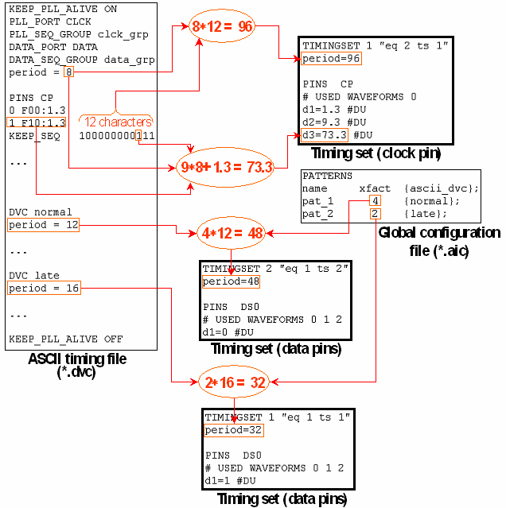

Calculating the Test System Cycle Lengths
The following figure shows how the test system cycle lengths are calculated for the clock pins and the data pins.

The upper part of the figure shows the period calculation for the clock pin, which is independent of the global configuration file. The ASCII period is 8 ns, the KEEP_SEQ sequence consists of 12 characters, and thus the test system cycle length in timing set 1 of equation set 2 is 96 ns. Note also that the delays correspond to the positions of the KEEP_SEQ sequence where the state character changes.
The lower part displays the calculation for the data pins. This calculation is performed in the standard way for every pattern that is contained in the global configuration file.
Depending on the x-mode factor that is specified for the individual patterns, the test system cycle length for the data pins can differ even if it is based on the same ASCII device cycle. Pattern pat_1 shown in the figure has an x-mode factor of 4 and is associated with the ASCII device cycle normal, which has a period length of 12. Thus, its test system cycle length is 48. For pat_2, which only has an x-mode factor of 2, the test system cycle length is 24.